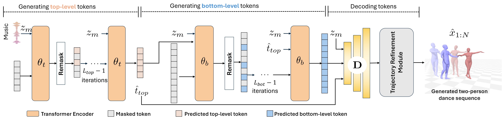

DuetGen: Music Driven Two-Person Dance Generation via Hierarchical Masked Modeling
Anindita Ghosh1,2,3*, Bing Zhou4, Rishabh Dabral2,3,Jian Wang4,
Vladislav Golyanik2,3, Christian Theobalt2,3,
Philipp Slusallek1,3, Chuan Guo4
1German Research Center for Artificial Intelligence (DFKI),
2Max Planck Institute for Informatics,
3Saarland Informatics Campus,
4Snap Inc.
*Work done during internship at Snap Research NYC
This work is accepted at the SIGGRAPH 2025 technical paper conference track.
DuetGen can generate synchronized two-person dance choreography from any input music, featuring natural and close interactions between dancers.
Abstract
We present DuetGen, a novel framework for generating interactive two-person dances from music. The key challenge of this task lies in the inherent complexities of two-person dance interactions, where the partners need to synchronize both with each other and with the music. Inspired by the recent advances in motion synthesis, we propose a two-stage solution: encoding two-person motions into discrete tokens and then generating these tokens from music. To effectively capture intricate interactions, we represent both dancers' motions as a unified whole to learn the necessary motion tokens, and adopt a coarse-to-fine learning strategy in both the stages. Our first stage utilizes a VQ-VAE that hierarchically separates high-level semantic features at a coarse temporal resolution from low-level details at a finer resolution, producing two discrete token sequences at different abstraction levels. Subsequently, in the second stage, two generative masked transformers learn to map music signals to these dance tokens: the first producing high-level semantic tokens, and the second, conditioned on music and these semantic tokens, producing the low-level tokens. We train both transformers to learn to predict randomly masked tokens within the sequence, enabling them to iteratively generate motion tokens by filling an empty token sequence during inference. Through the hierarchical masked modeling and dedicated interaction representation, DuetGen achieves the generation of synchronized and interactive two-person dances across various genres. Extensive experiments and user studies on a benchmark duet dance dataset demonstrate state-of-the-art performance of DuetGen in motion realism, music-dance alignment, and partner coordination.
Approach

Overview of our approach.
Our first-stage transformer \(\theta_t\) iteratively fills an empty sequence of top-level tokens in \(L_{top}\) iterations based on input music. Then,
the second-stage transformer \(\theta_b\) generates the complete sequence of bottom-level tokens in \(L_{bot}\) iterations, conditioned on both music and the generated
top-level tokens \(\hat{t}_{top}\). We combine these token sequences and decode them into two-person dance motions via the VQ-VAE decoder \(D\). We then apply a
lightweight network to refine the root trajectories and produce the final outputs.
✨ Results ✨
🔊 All videos contain audio.
BibTex
@InProceedings{ghosh2025duetgen,
title={DuetGen: Music Driven Two-Person Dance Generation via Hierarchical Masked Modeling},
author={Ghosh, Anindita and Zhou, Bing and Dabral, Rishabh and Wang, Jian and Golyanik, Vladislav and
Theobalt, Christian and Slusallek, Philipp and Guo, Chuan},
booktitle={ACM SIGGRAPH},
year={2025}
}
Contact
For questions, clarifications, please get in touch with Anindita Ghosh :
anghosh@mpi-inf.mpg.de